Various biographies, photobooks, and the like—this list also includes some so-called "mooks", magazine/book hybrids popular in Japan. Shinko Music, publisher of Music Life, has repackaged much of their Queen content into mooks in the past 10-15 years or so.
Name/Date
Cover
Publisher/Notes/ISBN
1977
Queen Rock Fun Photobook
Queen Rock Fun Photobook
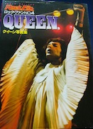
Shinko Music
1977
Queen, the Aesthetics of Glory
Queen, the Aesthetics of Glory
Japanese translation of Larry Price book
1977
Queen Story: The Glorious Princes of Rockk
Queen Story: The Glorious Princes of Rockk
Japanese translation of George Tremlett book. Shinko Music
1979
Queen, the Legendary Champions
Queen, the Legendary Champions
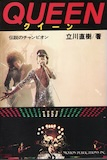
Nichion Publishing. Quoth Brian at the time: "This is the only book we endorse."
1981
Queen and their Music
Queen and their Music
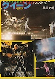
Pretty substantive history, especially given the time. Has info on bootlegs and early Smile gigs, a very useful resource for the contemporary Japanese fan.
4-276-23331-3
Interestingly, three early gigs are noted in the back that I haven't seen listed anywhere else:
• April 9th, 1972 at the Marquee (not to be confused with April 9th, 1973, also at the Marquee)
• January 7th & 20th, 1973 also at the Marquee, billed as Smile rather than Queen.
4-276-23331-3
Interestingly, three early gigs are noted in the back that I haven't seen listed anywhere else:
• April 9th, 1972 at the Marquee (not to be confused with April 9th, 1973, also at the Marquee)
• January 7th & 20th, 1973 also at the Marquee, billed as Smile rather than Queen.
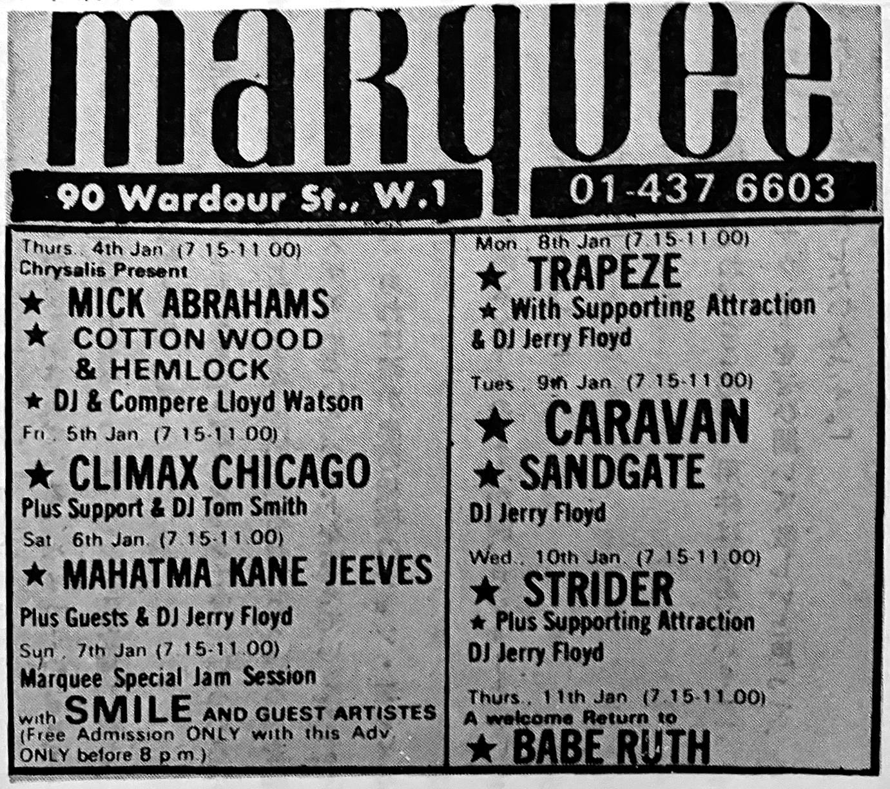
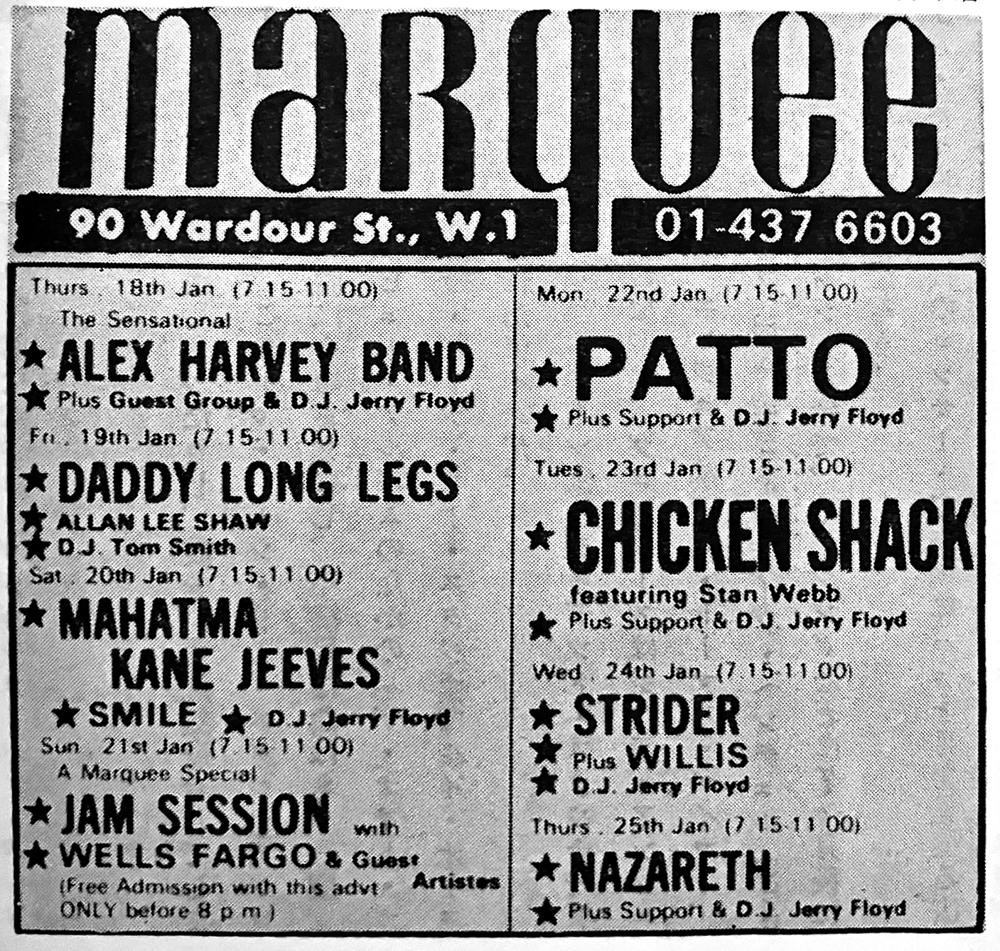
1992
Queen A Night at the Opera Visual Documentary
Queen A Night at the Opera Visual Documentary
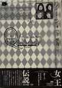
Updated Japanese version of Ken Dean's Queen: A Visual Documentary, published in 1986.
4-796-64976-6
4-796-64976-6
1993
Queen Visual Book: It's a Hard Life
Queen Visual Book: It's a Hard Life
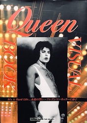
Shinko Music. A mostly B&W photobook released after Freddie's death, with a small history and discography in back. Also contains a reprinting of Freddie's final Music Life interview in 1985.
4-401-62153-0
4-401-62153-0
1994
Super Rock Guide
Super Rock Guide
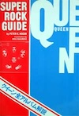
Japanese version of Peter K. Hogan book
1995
Queen: The Never-Ending Legend
Queen: The Never-Ending Legend
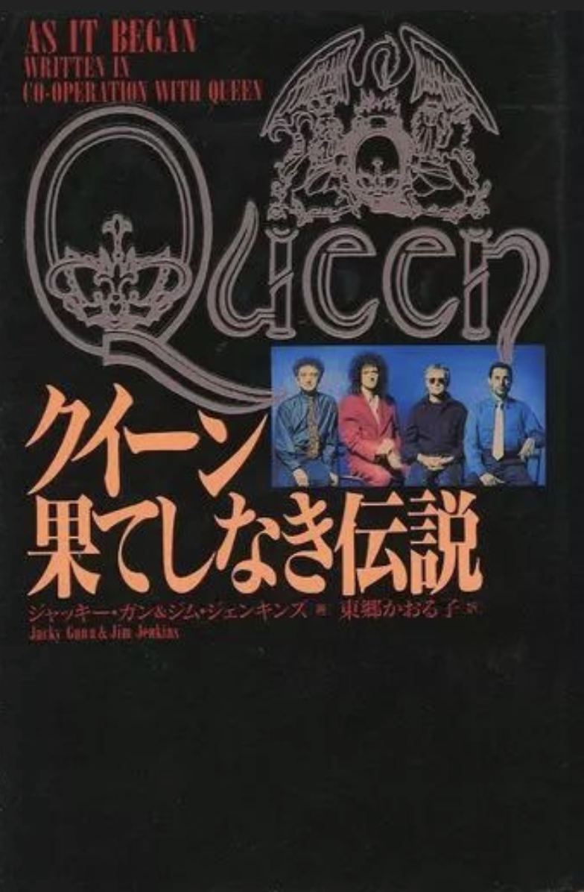
Japanese translation of the official Queen biography, As It Began
1997
Queen Live: A Concert Documentary
Queen Live: A Concert Documentary
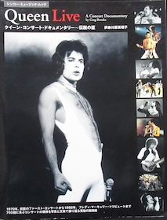
Shinko Music. Japanese version of Greg Brooks' book.
0-711-94814-3
0-711-94814-3
199?
Freddie Mercury to watashi
Freddie Mercury to watashi
Japanese translation of Jim Hutton's Mercury & Me.
4-947-59931-6
4-947-59931-6
2001
Movement fro Japan vol. 1
Movement fro Japan vol. 1
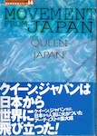
Ongaku Senkasha. Movement from Japan is a book series containing reprinted content from Ongaku Senka. Vol. 1 is 80% Queen, 20% Japan (the band), containing articles and features printed from April 1975 - February 1983.
4-87279-092-8
4-87279-092-8
2003
Shinko Music Archive Series: Queen I
Shinko Music Archive Series: Queen I
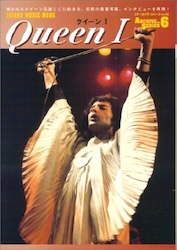
Shinko Music. Collection of features from Music Life, spanning 1974 - 1977.
4-401-61805-7
4-401-61805-7
200?
Shinko Music Archive Series: Queen II
Shinko Music Archive Series: Queen II
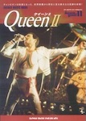
Shinko Music. Collection of features from Music Life, beginning where the book above left off.
4-401-61835-4
4-401-61835-4
2004
Everything About Queen: The Show Must Go On
Everything About Queen: The Show Must Go On
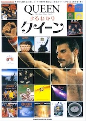
Shinko Music.
4-401-61860-6
4-401-61860-6
2004
Strange Days: Artists & Disc File Series 4—Queen
Strange Days: Artists & Disc File Series 4—Queen
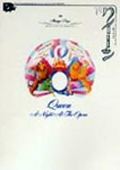
Strange Days is a magazine series that began in the late 90s which focuses on different musical artists in-depth. This is their book on Queen. It contains an extensive discography, including differences between Japanese/US/UK releases, and includes solo works, compilations, and records by other artists where the bandmembers made appearances. A handy little book!
2011
Queen as Seen in Music Life
Queen as Seen in Music Life
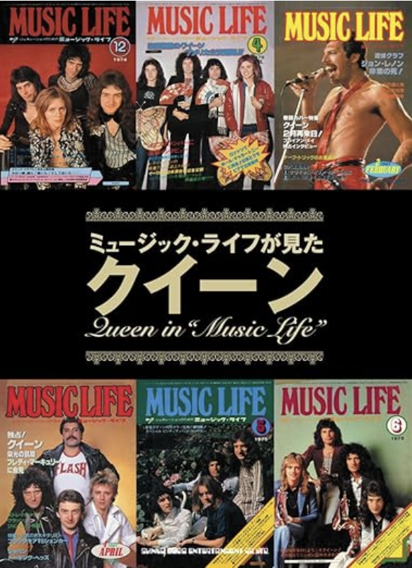
A compliation of Queen's appearances in Music Life
2018
MUSIC LIFE Presents Queen
MUSIC LIFE Presents Queen
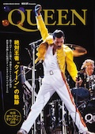
Shinko Music. Released ahead of the Bohemian Rhapsody biopic, covers band history, discography, Music Life content, new interviews, etc.
4-401-64687-6
4-401-64687-6
2019
Queen Live Tour in Japan
Queen Live Tour in Japan
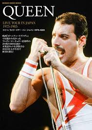
Shinko Music. Reprinted Queen "Tour Diaries" from prior Music Life issues, one for each Japanese tour. Also contains unseen photos.
4-401-64723-8
4-401-64723-8
2004, 2019
My Glorious Days with Queen
My Glorious Days with Queen
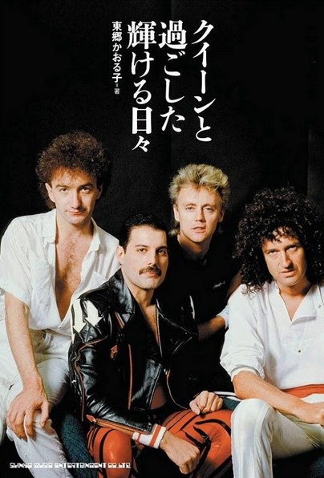
Shinko Music. Former editor of Music Life Kaoruko Togo's memoir about covering Queen during their heydays. Originally released in 2004, went out of print and was reprinted in 2019 with updated and expanded interviews.
4-401-64750-5
4-401-64750-5
2019
What is Queen Singing About?
What is Queen Singing About?
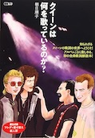
CD Journal. Contains lyrics translation & explanation, a manga comic about the making of Bohemian Rhapsody, and a Freddie paper doll.
4-909-77407-6
4-909-77407-6
2019
Queen's Ranking in Japan
Queen's Ranking in Japan
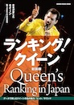
Shinko Music. Prominent music critics, journalists, etc. ranking different Queen songs/items.
4-401-64768-8
4-401-64768-8
2019
Queen Complete Song Guide vol. 1
Queen Complete Song Guide vol. 1
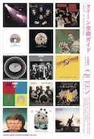
Shinko Music.
4-401-64828-5
4-401-64828-5
2020
Queen Complete Song Guide vol. 2: Live & Solo Edition
Queen Complete Song Guide vol. 2: Live & Solo Edition
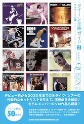
Shinko Music.
4-401-64994-X
4-401-64994-X
2020
Queen Encyclopedia
Queen Encyclopedia
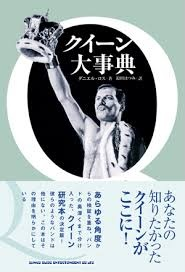
Shinko Music. A Japanese translation of Daniel Ross's book.
4-401-64960-5
4-401-64960-5
2020
Queen in Japan: Queen's Special Relationship
Queen in Japan: Queen's Special Relationship
Shinko Music.
4-401-64870-6
4-401-64870-6
2021
Queen: Memories of their Glorious Days
Queen: Memories of their Glorious Days
Shinko Music. Photobook by Wataru "Watal" Asanuma, who took many photos for Music Life in the 70s and 80s.
2022
Discover Queen: The Book
Discover Queen: The Book
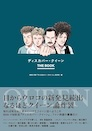
Shinko Music. Book version of the NHK-FM year-long weekly program "Discover Queen".
4-401-65248-7
4-401-65248-7
2023
Queen of my Youth, the Eternal Freddie: the Reckless Journey of a Pioneer Rock Girl
Queen of my Youth, the Eternal Freddie: the Reckless Journey of a Pioneer Rock Girl
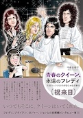
Shinko Music. The Queen-centric experiences of DJ and music critic Keiko "Snoopy" Imaizumi.
4-401-65398-0
4-401-65398-0
2023
Queen Greatest Days: 366 Days of Memories
Queen Greatest Days: 366 Days of Memories
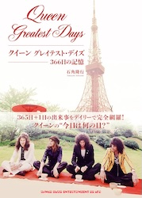
Shinko Music. A book of "On this day in Queen's history..."
4-401-65294-5
4-401-65294-5
2024
Queen of my Life Fan Book
Queen of my Life Fan Book
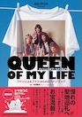
Shinko Music. A book that includes a pilgrimage guide to sacred Queen sites in the UK, Switzerland, and Japan, detailed explanations of Queen memorabilia, encounter stories, info, interviews, etc.
4-401-65442-0
4-401-65442-0
2025
Dearest Queen x Music Life: Official Queen Photobook
Dearest Queen x Music Life: Official Queen Photobook
Shinko Music. Published to celebrate the 50th anniversary of Queen's first visit to Japan in 1975.
4-401-62301-3
4-401-62301-3
2025
The Timeless Bohemian Rhapsody
The Timeless Bohemian Rhapsody
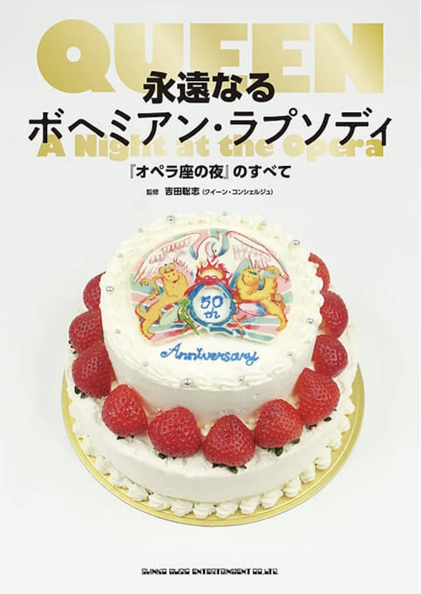
Shinko Music. Everything about the production background to release history and more of A Night at the Opera to commemorate its 50th year.
4-401-65669-5
4-401-65669-5
2025
A Splendid Rock Show: Memoirs from their Director, Tenpei Matsubayashi
A Splendid Rock Show: Memoirs from their Director, Tenpei Matsubayashi
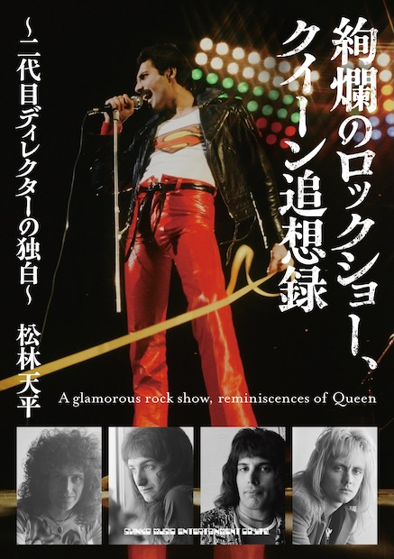
Shinko Music. Tenpei Matsubayashi was a Warner Pioneer exec who spent a lot of time with the band when they were in Japan. He also wrote some items for the Official Fan Club of Japan.
4-401-65669-5
4-401-65669-5